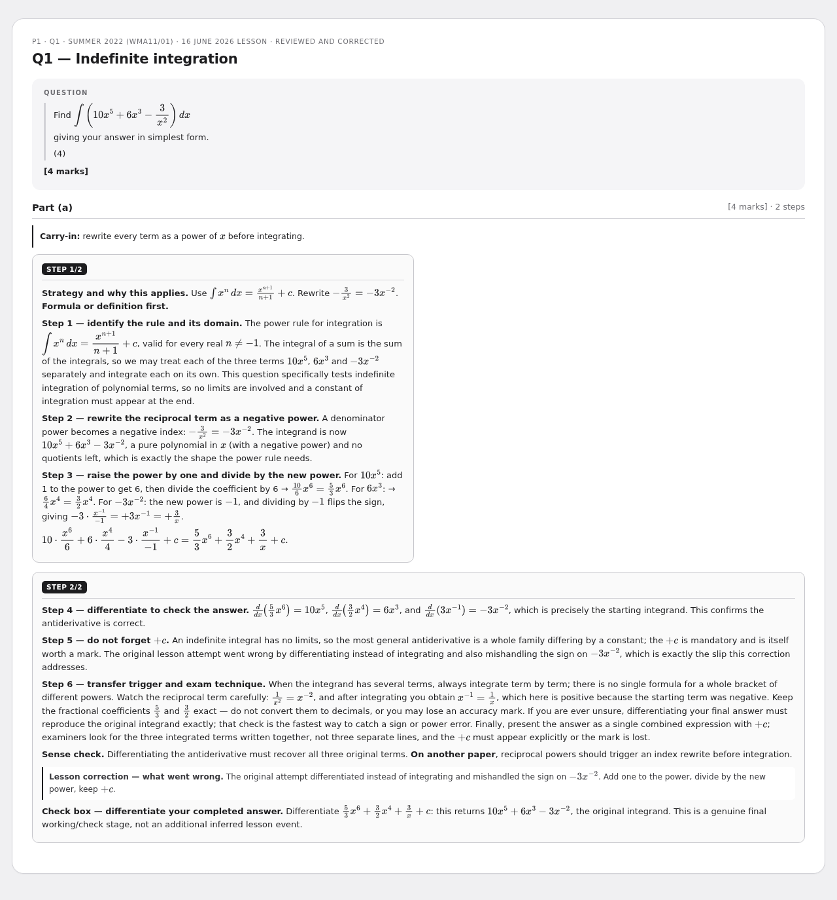
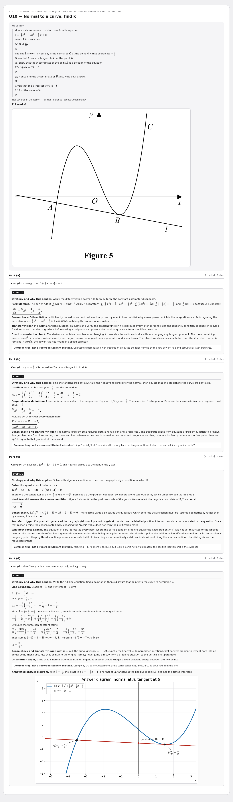
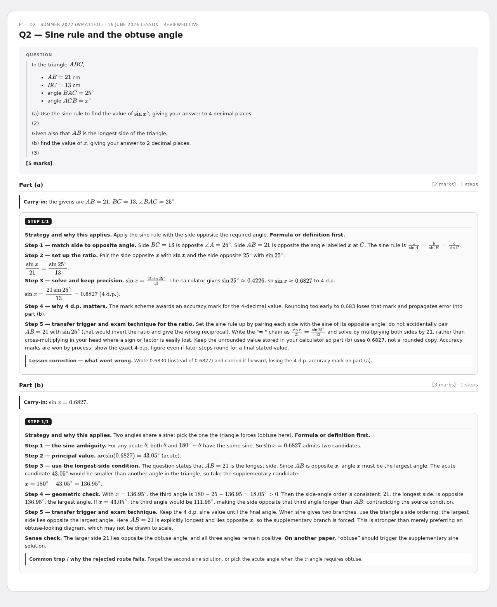
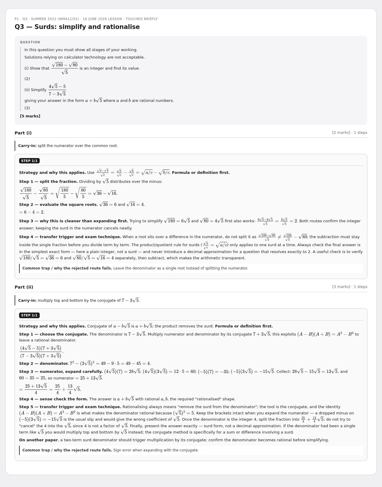
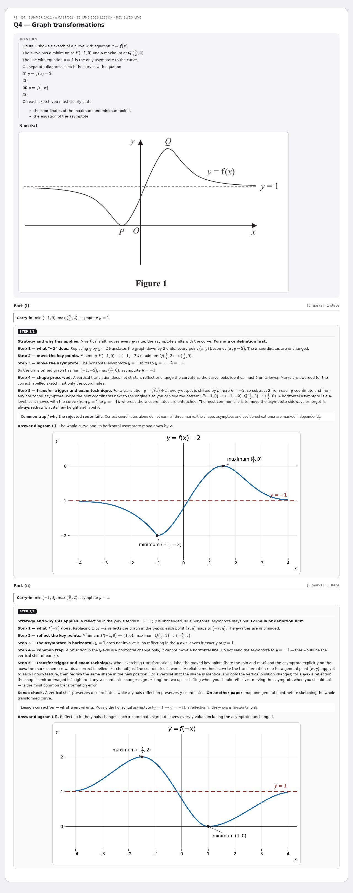
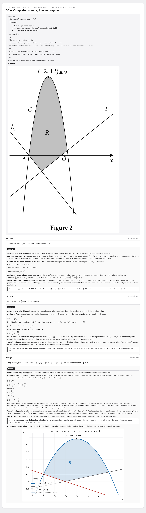
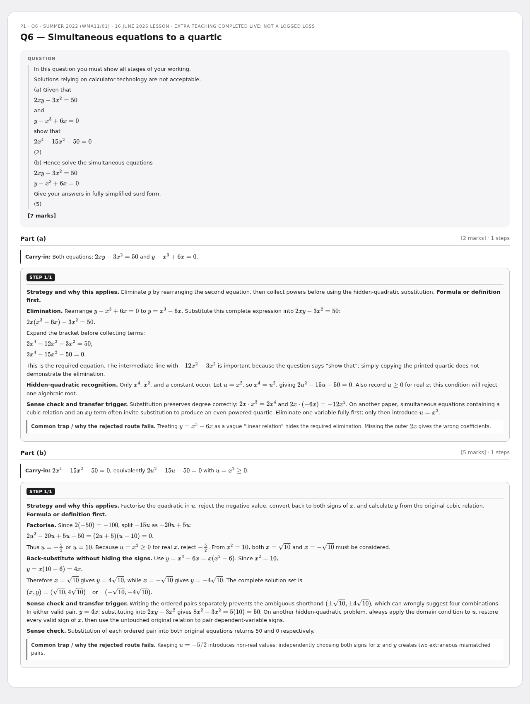
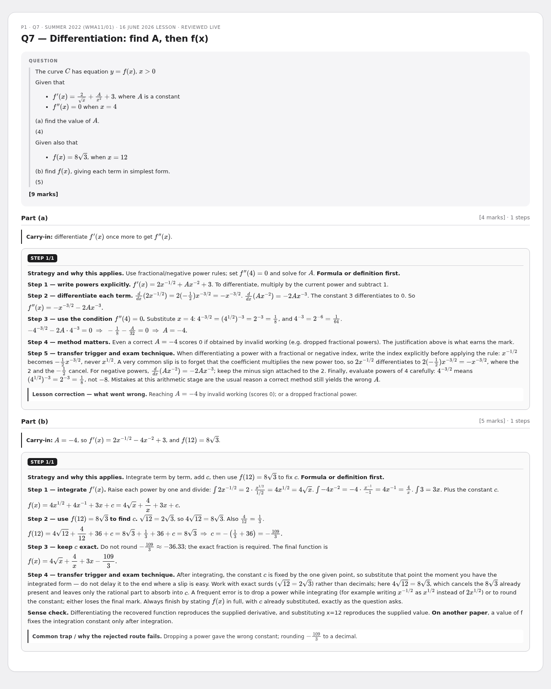
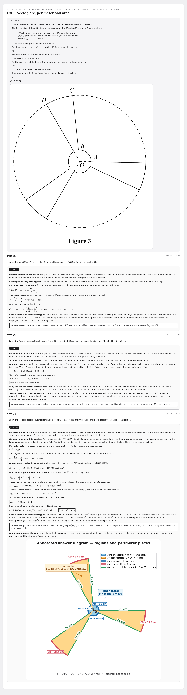
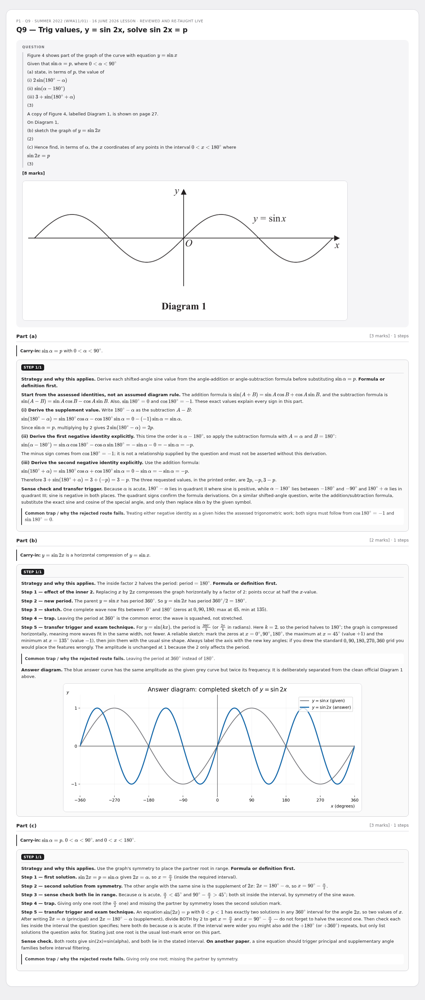

16 June - P1 May 2022 (WMA11/01) mistake review
Rebuilt multi-step cards - review preview. Not part of the live deck.
Open LLM flashcard deck
10 cardsWMA11/01May 2022P1
Q1 — Indefinite integration
P1 · Q1 · Summer 2022 (WMA11/01) · 16 June 2026 lesson · Reviewed and corrected

Q10 — Normal to a curve, find k
P1 · Q10 · Summer 2022 (WMA11/01) · 16 June 2026 lesson · Official-reference reconstruction

Q2 — Sine rule and the obtuse angle
P1 · Q2 · Summer 2022 (WMA11/01) · 16 June 2026 lesson · Reviewed live

Q3 — Surds: simplify and rationalise
P1 · Q3 · Summer 2022 (WMA11/01) · 16 June 2026 lesson · Touched briefly

Q4 — Graph transformations
P1 · Q4 · Summer 2022 (WMA11/01) · 16 June 2026 lesson · Reviewed live

Q5 — Completed square, line and region
P1 · Q5 · Summer 2022 (WMA11/01) · 16 June 2026 lesson · Official-reference reconstruction

Q6 — Simultaneous equations to a quartic
P1 · Q6 · Summer 2022 (WMA11/01) · 16 June 2026 lesson · Extra teaching completed live; not a logged loss

Q7 — Differentiation: find A, then f(x)
P1 · Q7 · Summer 2022 (WMA11/01) · 16 June 2026 lesson · Reviewed live

Q8 — Sector, arc, perimeter and area
P1 · Q8 · Summer 2022 (WMA11/01) · 16 June 2026 lesson

Q9 — Trig values, y = sin 2x, solve sin 2x = p
P1 · Q9 · Summer 2022 (WMA11/01) · 16 June 2026 lesson · Reviewed and re-taught live
